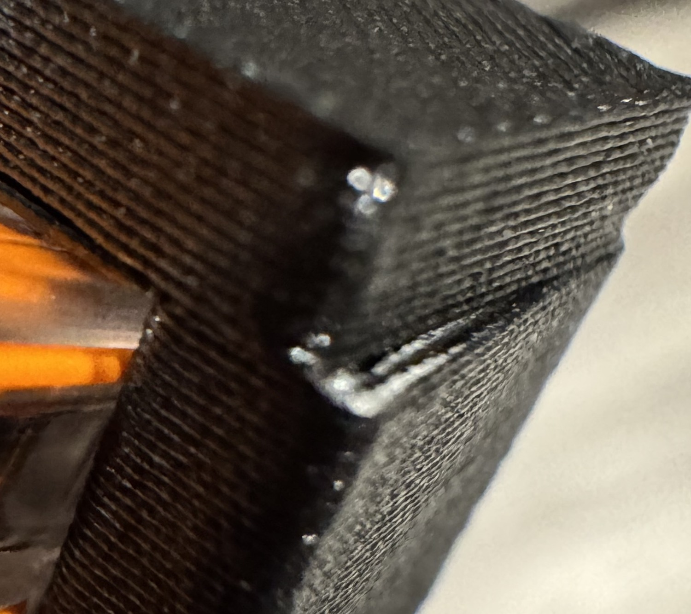

FUNDAMENTALS
Layer height is a process variable
Hold the production layer schedule when comparing fits. A small CAD change may land on the same printed course.

Read the actual floor and roof
Measure from the top of the last solid floor course to the underside of the first roof course. Compare the parts at the same production pose and depth.
Changing layer height also changes overlap at an overhang, the gap above support and the time before the next hot course. Use local fine layers only where the part recipe has qualified them.
The fit plate retained the {{wago:/geometry/pocket_depth_x_mm}} mm production insertion depth. The dots identify reductions per side from the same baseline.
| Pocket and mark | CAD Z (mm) | Slice Y (mm) | Slice Z (mm) |
|---|---|---|---|
| Upper, three dots | {{wago:/slice/pocket_roofs/0/cad_opening_yz_mm/1}} | {{wago:/slice/pocket_roofs/0/sliced_opening_y_mm}} | {{wago:/slice/pocket_roofs/0/sliced_opening_z_mm}} |
| Upper, four dots | {{wago:/slice/pocket_roofs/2/cad_opening_yz_mm/1}} | {{wago:/slice/pocket_roofs/2/sliced_opening_y_mm}} | {{wago:/slice/pocket_roofs/2/sliced_opening_z_mm}} |
| Lower, three dots | {{wago:/slice/pocket_roofs/1/cad_opening_yz_mm/1}} | {{wago:/slice/pocket_roofs/1/sliced_opening_y_mm}} | {{wago:/slice/pocket_roofs/1/sliced_opening_z_mm}} |
| Lower, four dots | {{wago:/slice/pocket_roofs/3/cad_opening_yz_mm/1}} | {{wago:/slice/pocket_roofs/3/sliced_opening_y_mm}} | {{wago:/slice/pocket_roofs/3/sliced_opening_z_mm}} |
At {{wago:/slice/first_layer_height_mm}} mm first and {{wago:/slice/ordinary_layer_height_mm}} mm ordinary layers, both upper pockets have the same sliced Z opening. The lower pockets differ by one ordinary course. Report the shared opening and keep the test on its original schedule.
Native Wago measurements · Crack and caliper photos · Faucet fine-layer trial · Qualified enclosure layer bands